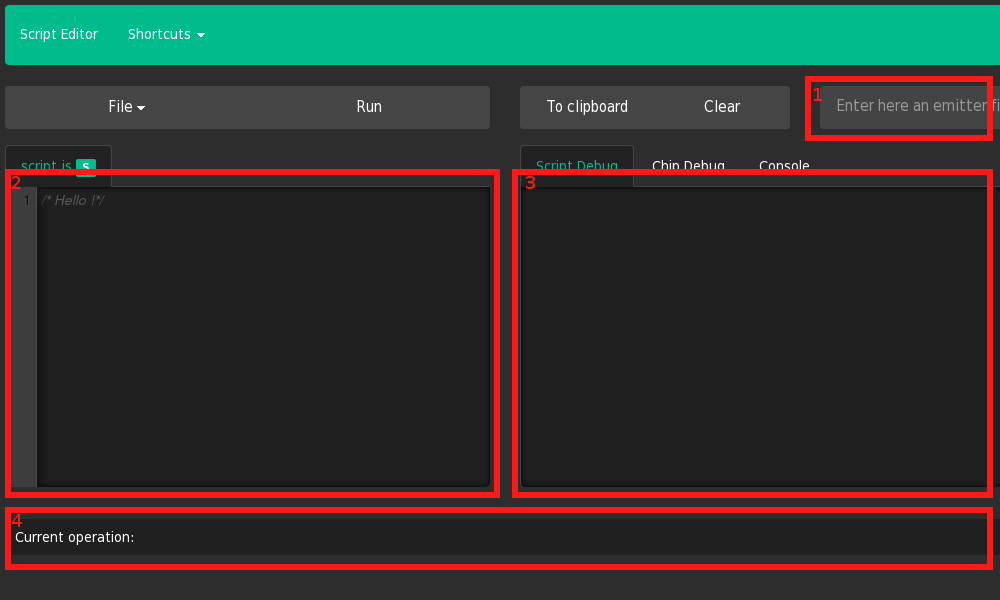

This is a tutorial that describes the facilities offered by the web interface.

This project allows to interact with a board remotely. You can write a script specifying how the interaction should take place. The script should be written in the window #2. The output of the script will be displayed in the window #3, the operation that is now running is placed in the window #4. If the log output is too verbose it could be filtered with a regular expression typed in window #1.
The window #3 have several "modes" :
The modes are changed by clicking on the tabs located at he top of window #3. To clear the window #3, the button "Clear" should be pressed.
There are two types of documents (files) recognized by the environment :
The difference is that text documents are made to keep data, so no highlighting is done while viewing them, but script documents are made to keep code so they are highlighted. You can execute a text document but you'll get an error. Text documents are useful when manipulating data.
main.js:
var api = require("api");
var doc = require("documents");
var board = require("sam3x");
var arr = doc.get_data("big-array.csv").split(",");
if(arr.lenght < 0 || arr.length > board.FLASH_SIZE )
throw("Bad csv data");
api.mem.write(board.FLASH_START, arr);
......
sam3x.js:
exports.FLASH_START = 0x00a0000
exports.FLASH_END = 0x00aFFFF
exports.FLASH_SIZE = exports.FLASH_END - exports.FLASH_START;
......
big-array.csv:
1,2,4444,3,4,5,5 .....